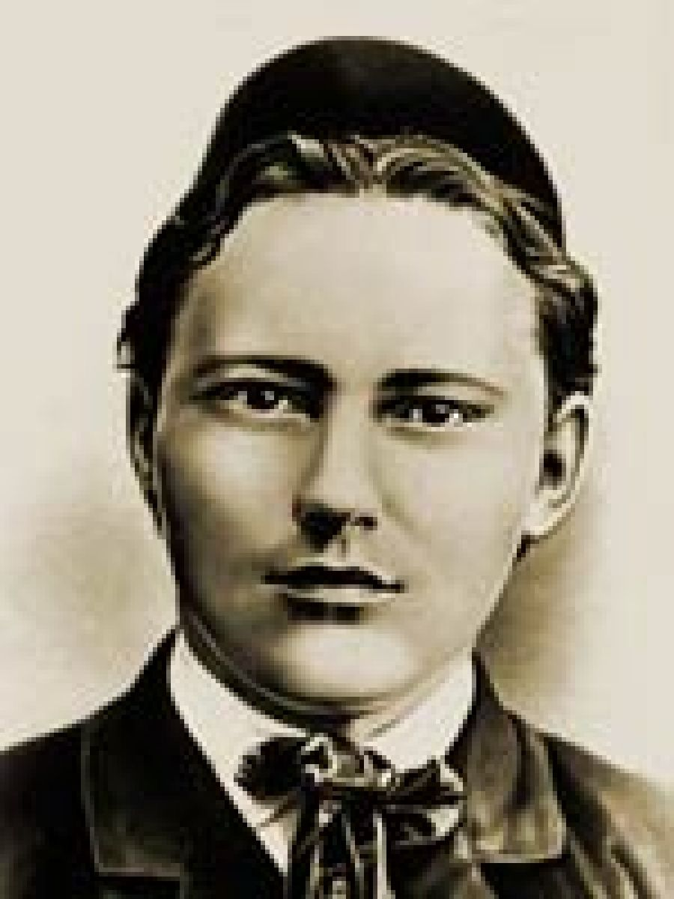

Творческий путь
- После окончания медресе в 1905 году у Габдуллы началась новая, самостоятельная жизнь. Вскоре он вернулся в Казань, где решил полностью посвятить себя служению своей родине.
- В течение следующих шести лет Тукай активно занимался творчеством: он быстро нашел свою нишу в литературных кругах Казани, и стал пользоваться большой популярностью среди прогрессивной молодежи. Во всех произведениях молодого писателя красной нитью прослеживалась тревога за судьбу своего народа, достоинство, четь, совесть, неподкупность.
- Наиболее известные произведения Тукая – « Маленькое путешествие», «Пара лошадей», «Татарская молодежь», «Дача». Не забывал писатель и о самой юной читательской аудитории. Для детей им были написаны сказки «Шурале», «Призыв к труду», «Веселые странички».
- Впоследствии творчество Габдуллы Тукая вошло в школьную программу 6 класса в казанских школах.
- Главной проблемой перевода произведений татарского поэта на русский язык была неточность их содержания. Со временем все погрешности были исправлены.
- Будучи идеалистом и романтиком по натуре, Габдулла мало заботился о своем финансовом положении. Куда больше его интересовало бескорыстное служение народу, общественная и просветительская деятельность. Постоянно живя на грани бедности, Тукай существенно подорвал свое и без того хрупкое здоровье.